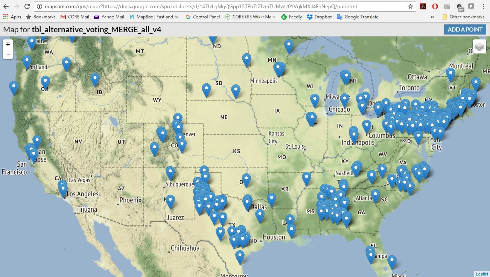
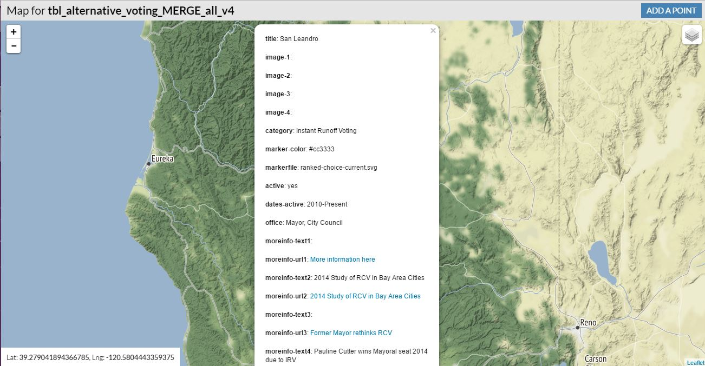
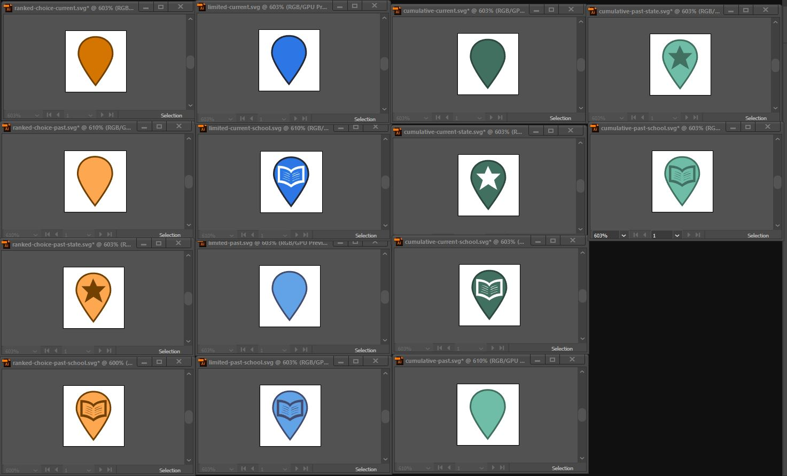
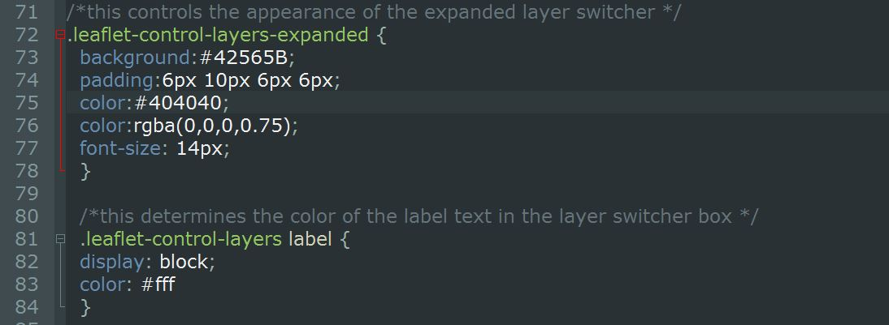

Alternative Voting Systems
A Spreadsheet-driven Web Map
produced for the Sightline Institute
Presented by Matt Stevenson and Eldan Goldenberg
February 15, 2017
What is the Sightline Institute?
The Sightline Institute is an independent, non-profit think tank based in Seattle. They focus on sustainability solutions for all communities, and champion public policies that tackle issues of racial and economic inequality.
Why Map Alternative Voting Systems?
This past US election displayed the perils of plurality voting. Sightline believes Cascadia can lead the way and spur a national transition to voting systems that engage more people, better reflect the American electorate, and guarantee democratic results. They wanted to explore how other communities are using novel approaches to voting.
Map Requirements
- Dynamically updating map
- Data stored in a Google sheet
- Clearly distinguish 14 categories of data
- Pop-ups containing images, videos, text, links
- Branded to match Sightline's website
Seeking Help

GUS (Sam) to the Rescue!
Click here to try GUS for yourself.
GUS Map Output

GUS Popup

Seeking Help Again
↙
This is the slide title.
This is where the slide text goes.
This is the slide title.
This is where the slide text goes.
This is the slide title.
This is where the slide text goes.
14 Classes of Data?
- Ranked Choice
- Cumulative Choice
- Limited Choice
x current
x inactive
x Statewide
x School District
Maki Magic

Use CSS to Match Look of Sightline Website

Let's take a look at the map!
Other Applications
thank you
We are happy to answer your questions.